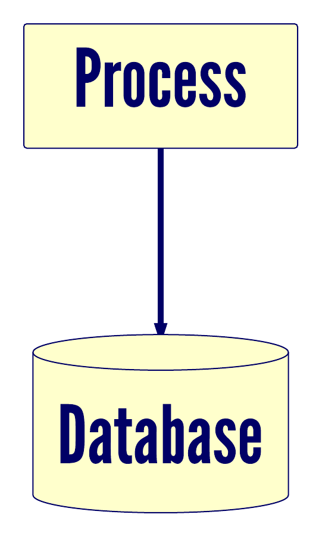
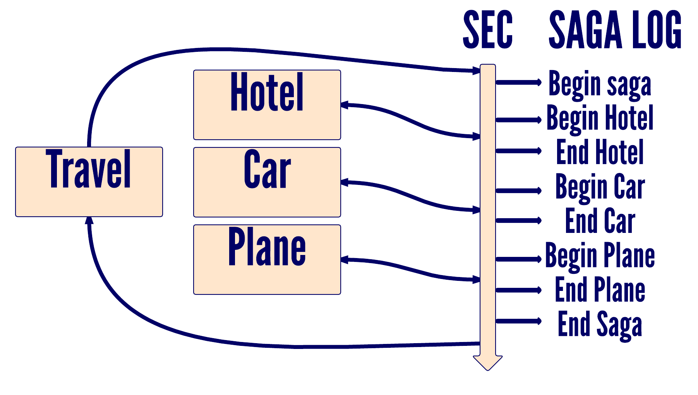
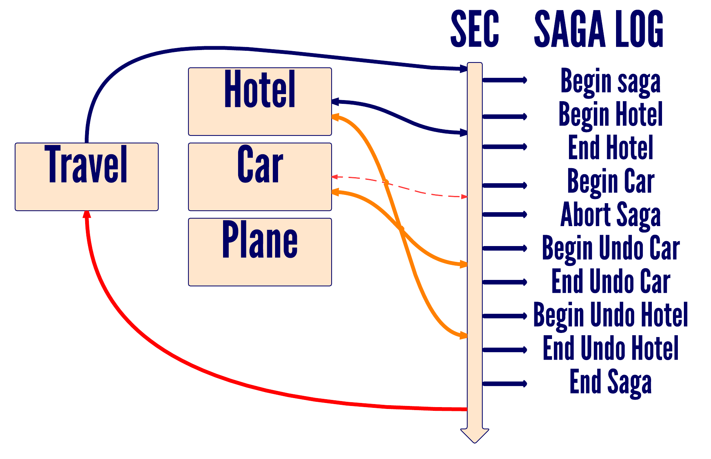
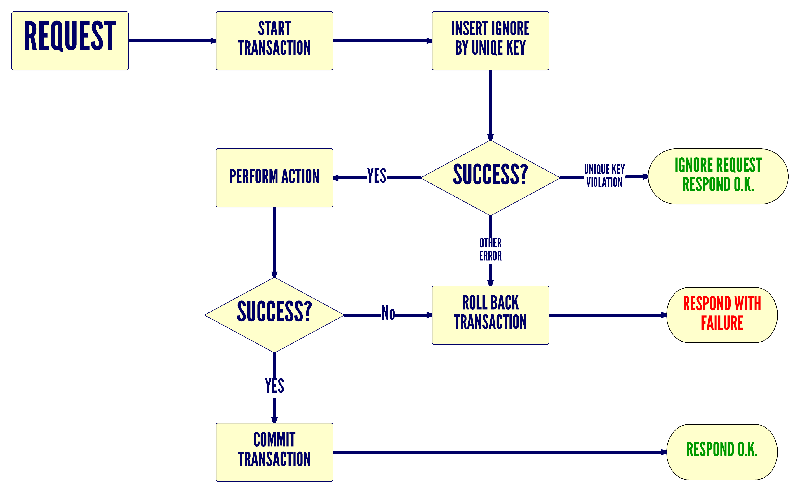

The Saga Pattern
Rafael "DeVill" Ordog
@devillsroom
Distributed systems

Transactions
What if these are in different databases?
The naive way
Brute force
Distributed transactions?
2 phase commit
Scalability issues
Google could
fix this
What if we didn't stick to ACID?
The saga pattern
Long lived transactions
A saga is a sequence of independent actions,
with idempotent compensating actions
Cool... so what's up with e-mails?
The Saga guaranty
Atomicity vs Availability
The Saga Execution Coordinator (SEC)
Saga log


When to undo?
The compensating action should be idempotent
Forward recovery
Periodically retry unfinished sagas,
and replay all (unsuccessful) events.
Each action must be idempotent
How to achieve idempotency?
Each action needs a unique ID

Why this works better?
Thank you!